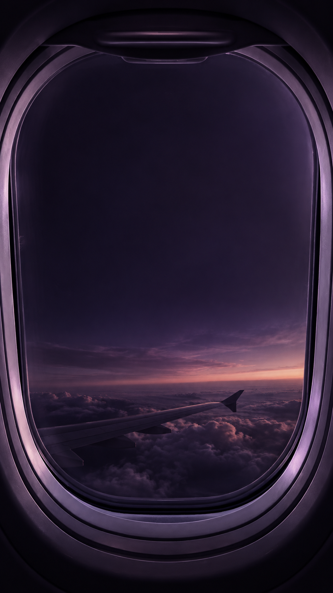

تكلفة الطيران / كنز يشرح
اقتصاد الطيران · بيانات عالمية لعام 2022
أين تذهب
تكلفة الطيران؟
28.7%
وقود الطائرات والزيوت
من إجمالي تكاليف شركات الطيران
9.1%
الإهلاك
والاستهلاك المحاسبي
8.6%
رواتب أطقم الطيران
ومصروفاتهم
بقية بنود التكاليف
53.6%
الوقود جزء من الصورة.
وتوزيع التكلفة يختلف من منطقة لأخرى.